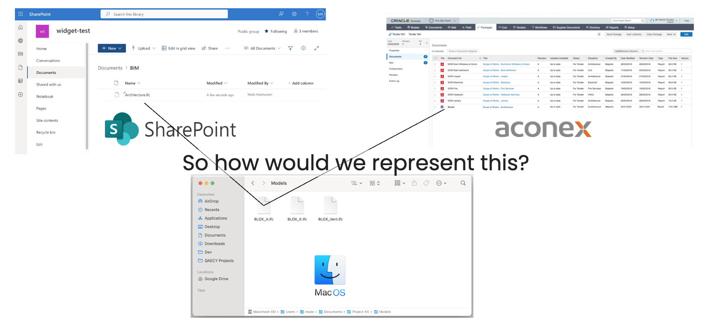

your knowledge, accessible
A decentralized knowledge graph
The AEC industry has a fragmented and decentralized nature
Designing, maintaining and operating a built asset involves expertise from a myriad of professions
Therefore, there are many perspectives on each and every subset of the project
What do you see?

What the architect sees

What the ICE engineer sees
What the low voltage engineer sees
What the low voltage engineer sees
What the HVAC engineer sees
Today's BIM doesn't handle this nature well


BIM is siloed.
One discipline, one model
Duplication is necessary
The only context that exists between them is the one established when putting them in the same coordinate system and doing a clash detection
A silo-free BIM would focus on the context and could be decentralized


This would be a complete decentralization of BIM which is obviously not easy to achieve.
But a step on the way would be to make what we have more connected...
The reality
No project has ONE BIM model
Not all information is (or should ever be) in the BIM model
- Reports
- Meeting minutes
- e-mails
- Calculations
- Images from site registrations
- Point cloud scans
- Reference images
- Sketches
- Norms & Regulations
Information is scattered across different files and often on different document management systems (DMSs)

This makes it hard to answer simple questions like "Is this the most recent version of that plan drawing" or "what documents describe this pump?"
How we deal with it

So how would we represent this?
We use a hashing mechanism so the same content will always translate to the same unique id

We can use this technique to always create the same id for the same input
It's important to consider what parameters should change the id and which should not
The file id is generated from a combination of what system it is stored on and what is it's path
The content id is generated from the file content
The same file name on two different platforms will then create two different file ids
The same file stored at two different locations on the same platform will also create two different file ids
The file content id will however stay the same as long as the content doesn't change
This approach is completely flexible
One file can point to several content nodes (different versions) even though its name hasn't changed.
One content node can point to several cloud locations - one for each file.
So now we can deal with multiple representations of the same file. But what about the relationships between the individual content nodes?
Document fragments
A Content node is the most overall representation of a document
Any subset of a document is referred to as a Fragment and each Fragment can have sub-fragments in any arbitrary depth

Information such as the page number or the fragment position relative to its parent can be expressed using Selectors
Entity References
One process in the
 pipelines is
finding mentionings of Entity References in the
content of any document
pipelines is
finding mentionings of Entity References in the
content of any document
Default entities: Company, Person, Address, Material ...
Other: custom entities defined per project
Selectors can further specify where in the parent fragment it is found. For example specified as a bounding box or with an index range in a text.
All Entity Mentions are unique, so Albert Einstein in one document is not directly considered the same as Albert Einstein or A. Einstein in another document.
Already at this point the two documents have something in common
They mention Persons
This establishes a loose coupling between them even if they exist in different cloud environments
A follow-up process in the pipelines, is our entity resolution step, where we link similar entities
Now page 1 and page 2 have that in common that they are both about the Canonical Entity Albert Einstein
This establishes an even stronger link between the two
Canonical Entities are the standardized representations of Named Entities
For Canonical Entities there will be only ONE Albert Einstein that refers to all individual occurrences
There can be Canonical Entities that share the same name.
For example, there could both be a Company entity and a Fruit entity named Apple
The entity resolution process makes use of as much context as possible to resolve to actual unique entities. This means that context is incredibly important!
With this information it is now possible to query the knowledge graph for all documents and fragments that are about a specific Person or Location
BIM and Entity References
BIM objects are special kinds of Entity Mentions.
The reason why these are not Canonical Entities is that BIM objects are duplicated across models
There are other challenges with the siloed BIM that can be resolved by accepting the fact that any object in a BIM model is not the single source
- An object in one model can suddenly have relationships to objects in other models
- No need to establish mechanisms to avoid counting objects twice
- An object can be tracked over time
- A BIM object can have relationships to other entities like people, organizations, documents etc.
Relating a BIM object with an entity mention is not different from a text document other than it uses different selectors
1st floor in model A and model B might be the same but they might also refer to floors in different buildings
- therefore context is important as always
BIM models already have this information, and we extract this as relationships between and properties assigned to the entity mentions
The topological relationships we define between entities are aligned with the Building Topology Ontology (BOT)
BIM objects can also resolve to Canonical Entities
The same approach is valid for CAD documents, e-mails, images etc.
Explicit Canonical Entities
Most Canonical Entities in our pipelines are created by AI but it is also possible to define Explicit Canonical Entities in a project.
These are entities that are well defined in the project.
For example from a room programme or a project member list.
The approach can be
top-down: Here is the list of people - only resolve to those
By flagging explicit canonical entities it is possible to filter out unwanted entities
Lists of explicit canonical entities of certain categories and their inherited properties are extremely valuable in a construction project
"List all unique windows in building A and all the properties assigned to them"
Learnings and perspectives
- Our Knowledge Graph establishes loose connections between files on different systems
- Not only documents but the fragments within them are linked
- The graph sits on top of existing systems and can be implemented in a non-intrusive way
The quest of discovery always has a starting point. A type of object, a geo-location, a material, a person or company.
The more context we establish between fragments, the better discoverability we can deliver